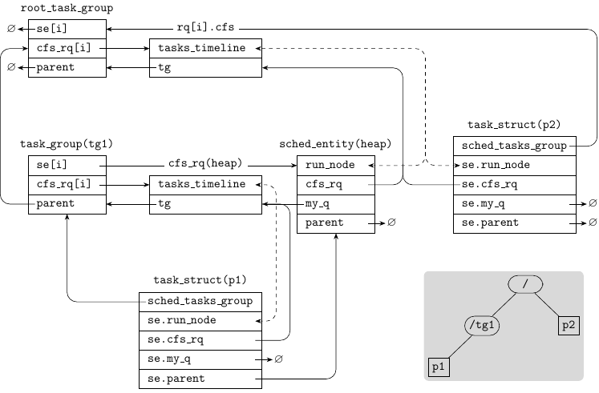

Linux CFS and task group
I dived into the kernel scheduler code under
(kernel/sched/) to understand how CFS works and how the
task group cpu.shares value is used in CFS.
1. CFS ¶
1.1. Concepts ¶
In CFS, every running entity (process or group) has a virtual runtime
(vruntime) which accounts for the entity's CPU usage. The scheduling
goal of CFS is to keep the vruntime of all running entities to be
the same.
The vruntime is calculated by dividing the physical CPU run time of
the entity with a weight factor. A high priority entity has a larger
weight than a low priority entity, thus the vruntime of a high
priority entity grows slower than that of a low priority entity.
Effectively, when both are running, the high priority entity is
allocated more phsical CPU time.
Assume a CPU has running entities. Entity has weight and CPU time , then
Over any time period , we have:
1.2. Implementation notes ¶
1.2.1. Nice level, priority and weight ¶
User can change the nice level of a process with the nice() syscall
or the setpriority() syscall. nice levels are mapped to priority
values using the macro NICE_TO_PRIO(), and priority values are
mapped to weights using the lookup table sched_prio_to_weight. The
following table shows these mappings:
| nice level | priority | weight |
|---|---|---|
| (min) | ||
| (default) | ||
| (max) |
The comment above sched_prio_to_weight explains why 1.25 is used as
the base for weight calculation:
/*
* Nice levels are multiplicative, with a gentle 10% change for every
* nice level changed. I.e. when a CPU-bound task goes from nice 0 to
* nice 1, it will get ~10% less CPU time than another CPU-bound task
* that remained on nice 0.
*
* The "10% effect" is relative and cumulative: from _any_ nice level,
* if you go up 1 level, it's -10% CPU usage, if you go down 1 level
* it's +10% CPU usage. (to achieve that we use a multiplier of 1.25.
* If a task goes up by ~10% and another task goes down by ~10% then
* the relative distance between them is ~25%.)
*/
The above comments doesn't make perfect sense to me. But we can do a few examples to understand the effect of nice levels.
Example 1: One CPU with 2 running processes, p1 and p2. Both
processes have the default weight 1024. Their CPU run times are
When the weight of p1 changed from 1024 to 820 (from nice 0 to
nice1), their CPU run times are
So p1 gets ~11% less CPU time and p2 gets ~11% more CPU time.
The test for this example is here.
Example 2: One CPU with 4 running processes, from p1 to p4. All
processes have the default weight. The CPU run times are
When the weight of p1 changed from 1024 to 820 (from nice 0 to
nice1), their CPU run times are
p1 gets ~16% less CPU time and the other processes get ~5% more
CPU time. The test for this example is
here.
1.2.2. Data structures ¶
struct rq {
struct cfs_rq cfs;
...
}
struct rq is the per-CPU data structure that system run queue
information. Its cfs field stores the root level CFS run queue
information.
struct cfs_rq {
struct load_weight load;
unsigned int nr_running;
u64 min_vruntime;
struct rb_root_cached tasks_timeline;
/*
* 'curr' points to currently running entity on this cfs_rq.
* It is set to NULL otherwise (i.e when none are currently running).
*/
struct sched_entity *curr;
struct task_group *tg; /* group that "owns" this runqueue */
...
}
struct cfs_rq stores information of CFS run queue. Each CPU has a
root level cfs_rq data. Also each task group has one cfs_rq for
each CPU. The run queue is implemented as a red-black tree of struct sched_entity. The fields of struct cfs_rq are as follows:
-
load: the sum ofsched_entity(se)weights on the run queue. -
nr_running: the number ofseon the run queue. -
min_vruntime: the minimumvruntimeof allseon the run queue. This value is used to initialize thevruntimeof asewhen theseis enqueued. -
tasks_timeline: the red-black tree's root node. -
curr: the currently running entity on this cfs_rq. -
tg: the task group that owns thecfs_rq.
struct sched_entity {
struct load_weight load;
struct rb_node run_node;
u64 vruntime;
struct sched_entity *parent;
/* rq on which this entity is (to be) queued: */
struct cfs_rq *cfs_rq;
/* rq "owned" by this entity/group: */
struct cfs_rq *my_q;
...
};
struct task_struct {
struct sched_entity se;
struct task_group *sched_task_group;
...
}
struct task_group {
/* schedulable entities of this group on each CPU */
struct sched_entity **se;
/* runqueue "owned" by this group on each CPU */
struct cfs_rq **cfs_rq;
struct task_group *parent;
unsigned long shares;
...
};
struct sched_entity stores scheduling information. Each struct task_struct contains a se field of struct sched_entity. Also
each struct task_group contains one se for each CPU.
struct sched_entity contains the following fields:
-
load: the weight of the entity. -
run_node: the red-black tree node. -
vruntime: thevruntimeof the entity. -
parent: theseof the parent task group. -
cfs_rq: the CFS run queue that manages these. -
my_q: for a processse, this field isNULL; for a task groupse, this field is the task group'scfs_rqon the same CPU.
struct task_group contains the following fields:
-
se:se[i]is the task groups'ssched_entitydata for i-th CPU. -
cfs_rq:cfs_rq[1]is the task group'scfs_rqdata for i-th CPU. -
parent: the parent task group. -
shares: the task groupcpu.shares, scaled by 1024 for fixed point computation.
The following figure shows an simple example of task group tree and the corresponding kernel data structures.

As shown in the gray sub-figure, The system has a task group tg1
under the root task group. Process p1 belongs to tg1 and process
p2 belongs to the root task group. Both p1 and p2 are running
in the -th CPU.
The dashed lines mark the connection formed by red-black trees.
1.2.3. Initializing vruntime ¶
When a se is added to a cfs_rq, the se->vruntime is initialized
using the cfs_rq->min_vruntime. For example, the following is a
code trace for the fork() syscall:
_do_fork()
--> p = copy_process(NULL, trace, NUMA_NO_NODE, args)
--> retval = sched_fork(clone_flags, p)
--> p->sched_class->task_fork(p) // task_fork_fair()
--> se->vruntime = curr->vruntime // se is child, curr is parent
--> place_entity(cfs_rq, se, 1)
--> se->vruntime = max(se->vruntime, cfs_rq->min_vruntime+slice)
--> se->vruntime -= cfs_rq->min_vruntime // (1)
--> wake_up_new_task(p)
--> activate_task(rq, p, ENQUEUE_NOCLOCK)
--> enqueue_task(rq, p, flags) // enqueue_task_fair()
--> enqueue_entity(cfs_rq, se, flags)
--> se->vruntime += cfs_rq->min_vruntime // (2)
In function place_entity(), vruntime of the child process is set
according to min_vruntime of the cfs_rq. In (1), the vruntime
is counted as a delta. And in (2), when enqueuing the child, the
vruntime is set by adding the delta and the new
cfs_rq->min_vruntime.
1.2.4. Updating vruntime ¶
Function update_curr() is called at many places to update vruntime
of the current entity. The follwoing shows the related code snippet:
static void update_curr(struct cfs_rq *cfs_rq)
{
struct sched_entity *curr = cfs_rq->curr;
u64 now = rq_clock_task(rq_of(cfs_rq));
u64 delta_exec;
delta_exec = now - curr->exec_start;
curr->exec_start = now;
curr->vruntime += calc_delta_fair(delta_exec, curr);
update_min_vruntime(cfs_rq);
}
The new CPU execution time is calculated as delta_exec. Then
delta_exec is scaled to get the vruntime increment.
Function calc_delta_fair() multiplies delta_exec by a relative
scale factor and returns
curr->load.weight
delta_exec * ———————————————————
NICE_0_LOAD
NICE_0_LOAD is the default weight (1024) for nice level 0. So for
any processe with the default nice level, its vruntime equals to its
physical CPU run time.
Finally, min_vruntime of the run queue is updated accordingly in
function update_min_vruntime().
1.2.5. Scheduling ¶
The following shows the code trace of function __schedule():
__schedule()
--> next = pick_next_task(rq, prev, &rf) // pick_next_task_fair()
--> rq = context_switch(rq, prev, next, &rf);
Function pick_next_task_fair() could be simplified as follows:
struct task_struct *
pick_next_task_fair(struct rq *rq, struct task_struct *prev, struct rq_flags *rf)
{
struct cfs_rq *cfs_rq = &rq->cfs;
struct sched_entity *se;
struct task_struct *p;
do {
struct sched_entity *curr = cfs_rq->curr;
se = pick_next_entity(cfs_rq, curr);
cfs_rq = group_cfs_rq(se);
} while (cfs_rq);
p = task_of(se);
if (prev != p) {
struct sched_entity *pse = &prev->se;
while (!(cfs_rq = is_same_group(se, pse))) {
int se_depth = se->depth;
int pse_depth = pse->depth;
if (se_depth <= pse_depth) {
put_prev_entity(cfs_rq_of(pse), pse);
pse = parent_entity(pse);
}
if (se_depth >= pse_depth) {
set_next_entity(cfs_rq_of(se), se);
se = parent_entity(se);
}
}
put_prev_entity(cfs_rq, pse);
set_next_entity(cfs_rq, se);
}
return p;
}
1.2.6. Autogrouping ¶
You may be suprised when setting process priority does not take any effect. This is normally due to the autogroup feature. When this feature is enabled, a new CPU control group is created for each new session. If two processes belong to different groups, their priorities are overridden by group weights.
See man 7 sched
for more info about the autogroup feature. See the following
section for more info about group weights.